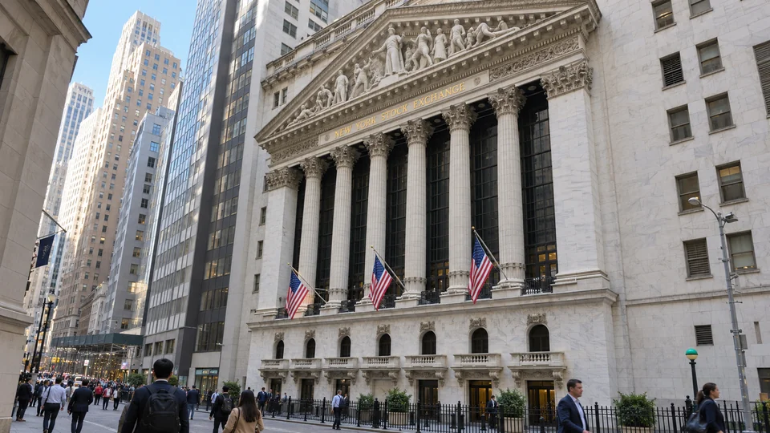

Nasdaq Rebounds, but Wall Street’s Recovery Is Uneven
The Nasdaq gained 1.1% at Monday’s close while the Dow slipped. A technology rebound leaves financing costs and earnings in focus.

US stocks ended Monday with a recovery concentrated in technology. The Nasdaq Composite rose 1.11% to 26,430.89 and the S&P 500 added 0.42% to 7,691.07, according to preliminary closing figures. The Dow Jones Industrial Average slipped 0.06% to 51,970.20.
The divergence matters: a stronger headline index did not mean that most shares advanced. The Associated Press reported that a majority of US stocks outside AI and technology fell. Monday brought relief for the market’s largest growth businesses, while the broader recovery remained incomplete.
A rebound in prices leaves the funding question open
Chip stocks recovered after an extended decline. The Philadelphia Semiconductor Index ended an eight-session losing streak. CoreWeave, meanwhile, surrendered its early gains despite a Goldman Sachs upgrade, illustrating how uneven the response remained among AI infrastructure businesses.
A rising share price does not refinance a company’s debt or reduce the cash needed to finish a project. It can improve sentiment and potentially make future equity financing more attractive, but those benefits depend on the terms available when money is actually raised. Monday’s trading should therefore be read as a change in market pricing rather than proof that funding risks have disappeared.
The index and the typical holding can tell different stories
In a capitalization-weighted index, larger companies have more influence over the result. A portfolio concentrated in smaller businesses or different sectors can move quite differently from the benchmark. The guide to index concentration explains why a positive S&P 500 session can coexist with weakness across many individual holdings.
That distinction also limits what can be inferred from a one-day rebound. To establish that a recovery is broadening, investors would need evidence across more companies and sectors over subsequent sessions. A technology-led rise alone cannot supply that evidence.
Breadth and weighting explain the apparent contradiction
A capitalization-weighted benchmark does not give every constituent an equal vote. A small number of large companies can contribute enough gains to offset declines elsewhere. An advance-decline count asks a different question by counting rising and falling stocks. Reading both measures can explain why a positive index close feels inconsistent with the experience of a portfolio holding a different mix of companies.
The Dow adds another methodological difference because it is price-weighted. Its daily move cannot be compared with the Nasdaq's as though the two were identical portfolios with different names. Sector composition and weighting rules influence the result before any conclusion about investor optimism is drawn. Monday's split should therefore be described with the particular indexes identified.
A rebound after a run of losses can also reflect changing positions as well as changing expectations for profits. Short covering, the reversal of hedges or a shift in the price investors will pay for the same earnings outlook can all affect a session. The closing figures alone do not disclose the contribution of each mechanism, so assigning the whole move to a single cause would go beyond the evidence.
For an AI infrastructure company, the distinction between accounting earnings and funding remains relevant. A contract may support future revenue while cash is needed earlier for equipment and construction. The balance sheet determines whether that gap can be financed on acceptable terms. A stronger market price can ease the environment for a later transaction, but it does not replace the transaction itself.
That leaves company reporting as a useful check on the rebound. Consistent evidence of cash conversion, manageable financing needs and demand across customers would support a stronger interpretation than one favorable trading day. The preliminary closing snapshot records the market's response on October 19; it does not establish that the next sessions or earnings releases will confirm the same direction.
Results now need to support the valuation
For the next round of company reports, revenue growth and earnings expectations are only part of the assessment. Capital spending, collections from customers and free cash flow help show how much growth can be funded internally. A large order or long-term contract may support a business without producing an immediate cash receipt.
The same discipline applies to guidance. A forecast for stronger demand needs to be considered alongside the expense of supplying it and the timing of the investment. Monday’s closing split leaves a clear test for the coming reports: whether improving expectations are supported by cash generation and a wider range of businesses.
Sources and methodology (2)
This report covers the October 19 US cash-market close, a new outcome distinct from TTN’s earlier futures report. Index levels are Reuters preliminary closing figures, cross-checked against AP’s rounded closing moves. The closing event occurred at 16:00 America/New_York (20:00 UTC); an earlier first-publication time on a continuously updated wire story does not describe the time of the close. No intraday quotes are presented as closing prices. Interpretation is TTN analysis.
Latest development: AI Stocks Slip Again as $110 Oil Tests the Rebound.